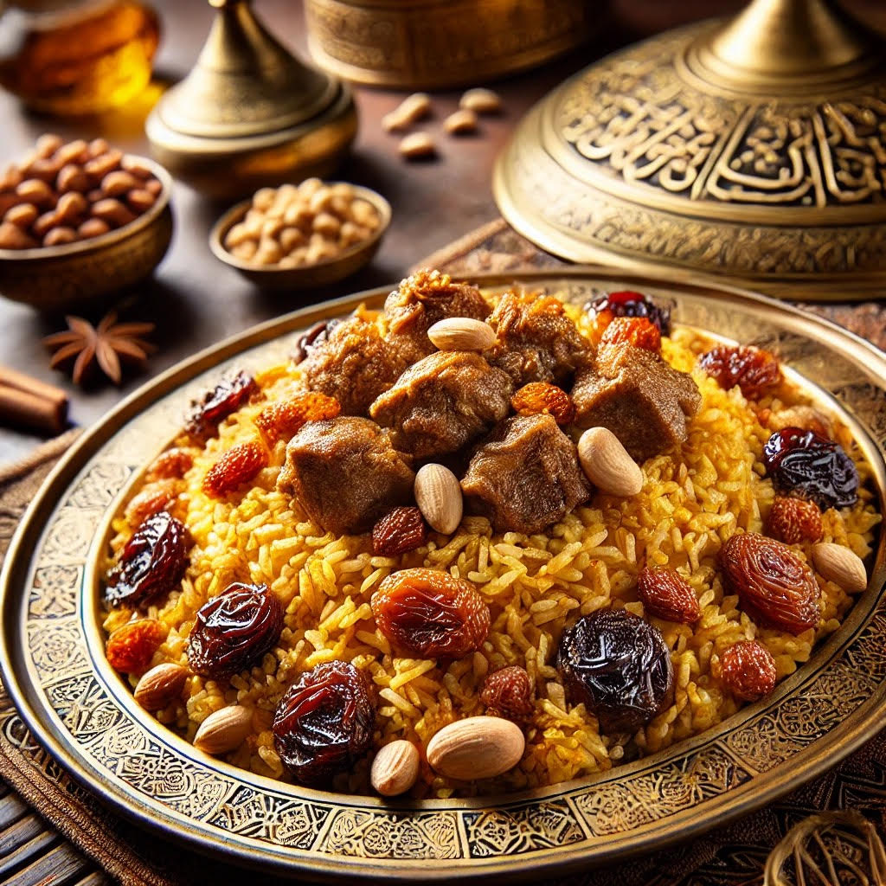

Machbous
A fragrant rice dish cooked with spices, meat (usually lamb or chicken), and sometimes fish. It is similar to biryani but includes Emirati flavors like saffron and cardamom....
UAE cuisine reflects the rich heritage and cultural diversity of the region, combining traditional Bedouin recipes with influences from neighboring countries like India, Iran, and the Levant. The cuisine is known for its use of fragrant spices, fresh ingredients, and age-old cooking techniques.
A fragrant rice dish cooked with spices, meat (usually lamb or chicken), and sometimes fish. It is similar to biryani but includes Emirati flavors like saffron and cardamom....
A traditional Emirati dish made from wheat, meat, and a pinch of salt. It is slow-cooked to a creamy consistency, making it a staple during Ramadan....
These are sweet fried dumplings drizzled with date syrup. Crunchy on the outside and soft on the inside, they are a popular Emirati dessert....
A sweet and savory dish made from vermicelli noodles flavored with sugar, cardamom, and saffron, topped with a thin egg omelet..
A creamy milk pudding flavored with rosewater and garnished with pistachios. It is a light dessert perfect for hot days....